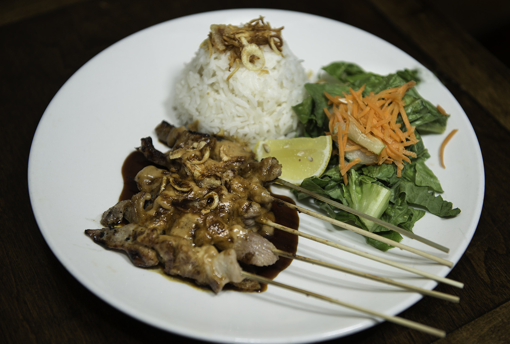
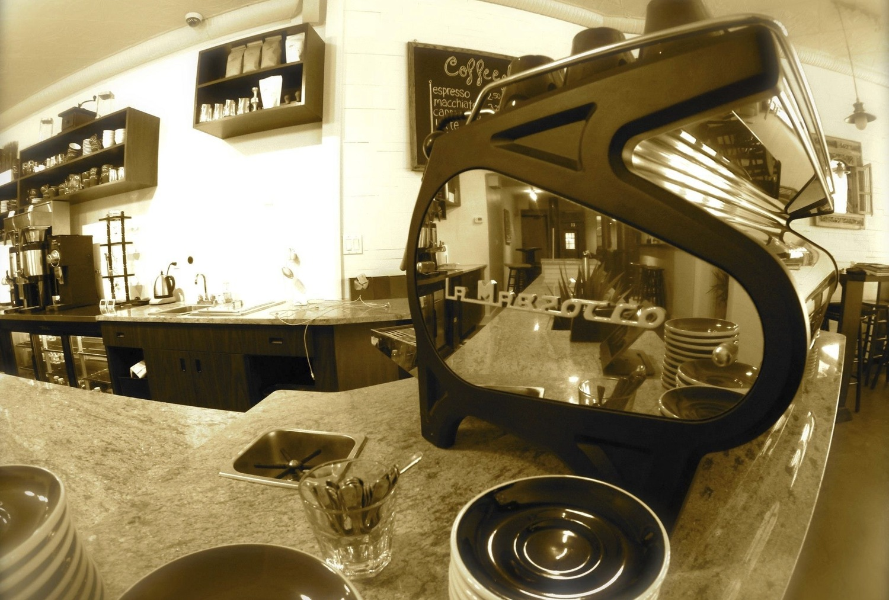

Interview: Liz Lapadula, Owner of Kopi Kopi
by Siena Richardson, Editorial Staff Writer
We had the opportunity to interview Liz Lapadula, Fusion Film Festival sponsor and owner of Kopi Kopi, a Greenwich Village cafe and craft coffee bar specializing in Indonesian coffee and food.
Starting March 2nd, Kopi Kopi will be open from 6am-10pm Monday-Thursday, 6am-11pm Friday, 8am-11pm Saturday, and 8am-10pm Sunday. 8 W 3rd St, New York, NY 10012.
Fusion: Could you tell us the origin story of Kopi Kopi?
Liz: I learned about coffee just three or four years ago because I happened to go to Indonesia and my sister, who’s a chemist, invited me to this coffee shop. Before, I’d never been that interested in coffee. The way I drank it, I’d just put milk and a lot of sugar and then everything tastes the same. So I actually asked the farmer, “Can you really taste the difference?” And he said yes, but you have to drink it black. So that’s when I started tasting espresso so I could differentiate the taste. And I looked at it from a science perspective, “Oh this one’s more aromatic, so it tastes different.”
You know, growing up in Indonesia, there are so many different types of coffee that you don’t really appreciate it. And then I went back and I realized there are seven different known origins of Indonesian coffee but not that many people know about it. For example, you go to Starbucks and you say, “Okay, Sumatran coffee.” But probably a lot of people don’t know where Sumatra is. So from there I learned about coffee, and that it’s very interesting. And so I thought, “How would I promote this delicious Indonesian coffee and cuisine?” And my son and my husband graduated from NYU, and this is just an ideal place.
Fusion: How has your background in pharmacology and law influenced your business?
Liz: Well, my background is science… I have a degree in chemistry and I look at coffee from a science perspective. Coffee is more complex than wine. It’s more aromatic, depending on how you roast it. I think roasting coffee is basically just like a science experiment, seeing what brings out the flavors of certain coffees. When I got interested in coffee, I went to barista school in Indonesia, and then to American Barista School in Portland, which is the center of coffee for the whole world. And I also learned roasting from a local roaster here, just briefly. But in terms of food, I’ve always loved to cook and I learned from Chef Henry Alexie Bloem, a judge from Top Chef: Indonesia. So I’m also the UN Ambassador for the Indonesian Chef Association, and the goal is to promote Indonesian cooking.
My background is also environmental law, so I like to focus on sustainability. I think it’s very important. I mean, we’re responsible to future generations. Especially because I have four kids; I want to make sure they have a good future. Every once in a while, if I go to Indonesia, I visit some of the coffee farms too because I think that it’s important.
Fusion: What have been some of the challenges of starting a business?
Liz: Well, I don’t have any business experience per se. But you know, I took classes, I talked to people who have experience in managing restaurants. And I go to Indonesia eight times a year to talk to the suppliers and also people in the hospitality business so I learn how their business model works. But of course, you know it’s always a challenge. Rent is high. And of course a lot of people still think we’re just a coffee shop, just coffee and pastries. So we are telling people just come in. I mean you wouldn’t expect it to be this big, so people don’t realize we have a full kitchen. It’s a challenge, trying to tell people we have good food here. We have full staff and we’re open till 11 o’clock in the evening. And we just started Seamless delivery. I also just introduced something called Kopi Express, kind of boldly saying, “Fifteen minutes or it’s free” for a rice dish (grilled chicken or vegetarian tofu scramble) or the satay chicken wrap. And it comes with a cookie and a drink. You can try our fried rice, which is number two in the world just on the go.
Fusion: What has been rewarding so far about running Kopi Kopi?
Liz: I love to interact with students. It’s funny because some Indonesian and Asian students think of me as their mentor. Everyone calls me “aunt.” It’s so interesting because in the morning, it’s a different dynamic with all the professors and students. And now, on the weekends, we have tourists. I just like that interaction. I think coffee is a language of itself basically, across all barriers. You can sit down with anyone and have a cup of coffee. And that’s what I’d like to have Kopi Kopi as, more of a cultural center, where you also enjoy coffee and good food. So if you go to other coffee shops, okay, it’s nice coffee, but that’s what I’d like the ambience to be here. The artwork, this is a donation from the UN Mission, it’s a three-dimensional carving that tells the story of the Mahabharata epic. And the other small pieces I brought myself from Indonesia, glass paintings painted from the back, and batik stamps, and an old antique iron. I haven’t completed it yet, but I want to have a textile wall where I display different designs of batik fabric.
Fusion: Your Indonesian coffee is so delicious, and such a unique product to focus on. Can you tell us more about it?
Liz: So our cappuccino, for instance, is basically four different types of Indonesian coffee. It starts with ten Indonesian green beans, the unroasted coffee. From ten then I roast it at three different levels: light, medium, dark. I work with the roaster for ten hours. Then from there, I have to taste every single one of them myself because I have a specific taste in mind. So it’s very involved. I think this is the only café that focuses on Indonesian coffee in the US, and we have the three highest end machines in one location. So I’m serious about my coffee. If only I had fifty hours a day, I would be extra serious.
We have other specialty drinks. For example, especially in the winter we have Ginger Brew, made of all fresh ginger with palm sugar. It’s delicious. There’s another one called Bandrek so like ginger, palm sugar, cinnamon clove and chile for a little spiciness. The food here is good. It’s something different. There’s a speckled layer cake. It’s definitely more of a Dutch influence but it’s seventeen layers. You make it a spoonful at a time, which is very tedious so that’s very expensive. But then the other thing that’s very unusual is the Pisang Molen, which NYU students call the banana burrito. It’s banana, cheese and chocolate, inside a French pastry, so there’s a Dutch influence as well. It’s something different.
Fusion: Can you tell us more about the food and other drinks on your menu?
Liz: A lot of people ask more about Indonesian food, because it’s relatively unknown here. We have the number one, number two in the world according to CNN Travel rundown, and then domestically. But then sometimes students miss certain foods so we make an Indonesian version. We have the Kopi taco but with an Indonesian twist: Indonesian hot sauce. And we try to make everything from scratch, so there’s no MSG and everything is made with fresh ingredients. We have a beer tap and we decided since we have craft coffee, we wanted to have craft beer and craft wine. So everything’s made in small batches and we have a relationship to the farmers.
We changed our business model starting two weeks ago. This used to be a café all day long. But since people asked us, saying they’d like to taste more Indonesian food, we changed. In the evening basically people don’t bring laptops, there’s more tables for dining. I think it’s good, introducing different types of drinks as well, whether alcoholic or non-alcoholic. I don’t know where the NYU professors go after work, so I’d like it to be a place where they can just wine and dine. Because if you go to a bar, it’s just too noisy, and I want it to be a nice ambiance.

Fusion: How has it been working with your son?
Liz: My son, who’s an NYU graduate, is a marine, and he’s also my business partner. But now he’s deployed as a second Lieutenant. But we do Facetime and I ask him questions. I’ll say, “Oh, we just installed a beer tap. What else do you think people would like?” And he’s a trainer at CrossFit, so he eats healthily. So I make sure we always have almond milk for cappuccinos, and salads, and everything is freshly made. When you’re in college people just want to indulge, but I want kids to eat healthy food so that’s what I like to prepare also, foods that are healthy and fresh.
Fusion: Do you have any advice for young women aspiring to jumpstart their own careers and projects, be it a business, a film, or something else?
Liz: Well, you have to do a lot of planning. Number one, I would look for a mentor first. Of course, people think it’s fun, and I mean, it is fun but it’s a lot of work. I would definitely look for a mentor first. Just have a lot of discussions, ask a lot of questions, like “how many hours do you spend a day?” Because they’ll probably say, “I’m not going to spend twelve or sixteen hours a day.” And so you have to be really passionate about it. If you’re passionate about it, if it makes you happy, just go for it. I’ve been a scientist, I’ve been an attorney, and this is completely different. It’s a lot of hard work, but I think it’s rewarding because it’s about getting to know people, meeting people with different backgrounds.
Fusion: You’ve worked with some really impressive organizations in the past- from the UN Indonesian Mission, serving the Secretary General, to the NYU Entrepreneurs festival, to the Yale Club. Kopi Kopi seems a great fit for Fusion- they both emphasize fluidity and progressiveness. What attracted you to Fusion?
Liz: Well, Kopi Kopi is a family business and woman-owned business, so it’s just a perfect synergy.And with NYU students there’s an interaction with different nations, different kinds of people. I love New York because New Yorkers like to experiment, try different foods, go different places. So I think this is a good opportunity to introduce the first Indonesian coffee because we are the fourth largest producer of coffee in the world. And Indonesian coffee is very delicious, and the farmers work very hard but there’s just not enough publicity about Indonesian coffee. When you go to the Specialty Coffee Association, they just don’t have the right presentation. But now, we’ve developed this nice espresso blend, which is delicious, on an Italian coffee machine. I’d like to introduce Indonesian coffee, discuss it as more of an intercultural conversation. That’s what intrigued me, and I think being here, right across from NYU, bridging all cultures, is the perfect opportunity.
